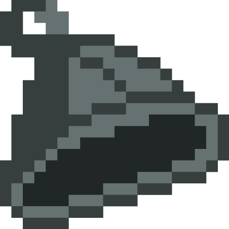
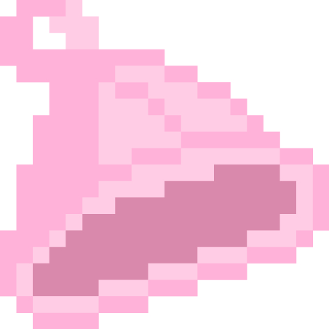

About
サウナとは？
サウナとはフィンランド発祥とされる蒸気浴・熱気浴の一種。
一般的には80℃以上の高温で、蒸された部屋に入り、体の表面から温めていくものです。
よく岩盤浴と間違えられがちですが、岩盤浴はサウナよりも低温（40～60℃）で体の内部からじっくり温めていきます。
Flow
ここからは簡単な流れを説明します。
-
その1
まずは入念に頭と体を洗ってください。
初めに匂い・汚れを落とし、他の利用者の方のためにも清潔な状態を保つよう心がけましょう。
-
その2
次にお風呂に入って体を温めましょう。
体が冷えている状態で、いきなり高温のサウナ室に入ると
体に負荷がかかるので、特に一回目はあらかじめ入浴しておきましょう。
-
その3
いよいよ本丸！サウナルームに突入！
しっかり水分補給をして、体を拭いたらサウナ室に入りましょう。
時間の目安としては、8～13分程度をおすすめします。
決して無理はしないように。
-
その4
水風呂で体を冷まそう！
サウナ室で十分に体を温めた後は、速やかに室内を出てシャワーを浴びてください。
汗をしっかり洗い落とすことが目的なので、体を冷まさぬように気をつけましょう。
-
その5
外気浴こそ真骨頂
サウナーがハマる理由はここにあります。よく「ととのう」という表現をしますが、
まさしく頭がぼーっとなり全身が脈を打つ感覚がわかります。
-
その6
上記をくりかえしましょう。
2回目からは3～5のフローを回してください。サウナ室での時間を徐々に長くしていくのか
短くしていくのかはひとそれぞれなので、自分にあったととのい易いパターンを見つけてください！
Manners
特に気を付けるべきサウナでのマナーを紹介します。
水風呂に入る際の注意点
水風呂に入る際に、施設によっては頭まで入水してはいけない場所もあるので
気を付けましょう。
水風呂近くに張り紙がされいる場合が
多いので事前に見ておいてください。
ロウリュする際の注意点
セルフロウリュする際は前もって、
周りの人に「ロウリュ失礼します」などの確認をとってからしましょう。
外気浴する際の注意点
外気浴する際は、眠らないように注意してください！
周りの人が座れなくなってしまうので、10～15分程度で退くよう心掛けておきましょう。
Goods
ととのう際のお供に！
初心者の方にこそおすすめしたいものがございます。
それはサウナハットです。サウナハットは頭部の過熱を防ぎ、 通常よりも長くサウナに入ることができます。
あまりサウナに入ったことがない方は 特にととのいやすい環境を作るためにもおススメします。
ここからはイチ押しのサウナハットを紹介します！今治のサウナハットです！4色展開しており、比較的価格帯もお手頃です。
ホワイト
グレー
グリーン
ピンク
最後に
最後まで閲覧していただき、ありがとうございました。
いろいろと気を付けるべきことがあり、最初は少し窮屈に思うかもしれませんが、慣れたらきっとリラックスして楽しめるかと思います。
サウナハットを手に取り、サウナ生活を満喫しましょう。
それではあなたにとって最高のサウナライフを！！
今日の運勢

ボタンを押してスタート